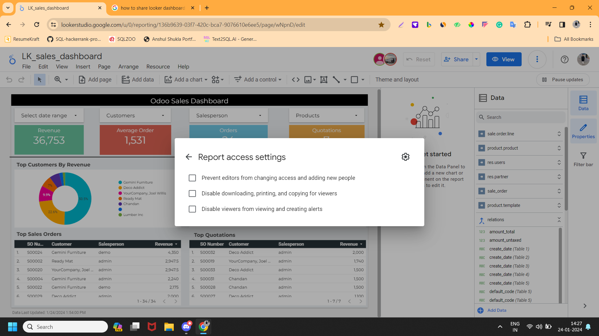

TechFinna Looker Sales Dashboard
Pre-requisites
This is a readymade & customisable Google looker Studio dashboard. To run this dashboard on your Odoo data, get Odoo Looker Connector here
Odoo Tables Used
Sale order line
Product Product
Res Users
Res Partners
Sale Order
Product Template
KPI’s Explain-
Revenue- Total sales is a key performance indicator (KPI) used by sales departments to track the total amount of revenue generated from sales over a given period. It's also referred to as total revenue and is a good measure of business health.
Average Order- Average order is a metric that measures the average total of every order placed with a merchant over a defined period of time. It is calculated by dividing the total revenue by the number of orders placed.
Orders- The Total Orders metric represents the total number of purchases made by customers on a platform, providing insights into the volume of sales and customer conversions.
Quotations- Quotation KPI shows how many orders are in draft and sent status in your sale orders.
Top Customers by Revenue- This donut chart KPI shows your top customers according to their revenue. Here you can find out your key customers.
Top Selling Products By Quantity- This Pie chart KPI shows your top-ordered products from your customers, it helps you to manage inventory according to your customer's interest.
Top Sales Orders- This KPI shows your top sale order number sorted by your revenue in descending order.
Top Quotations- This KPI shows your top Quotations that are in draft and sent status and sorted by your revenue in descending order.
Filter & Slicers-
Date Range- This provides an interactive way to narrow down the data displayed in visualizations to a particular timeframe, making it easier to focus on specific periods of interest.
Customers- By using this slicer you can find out your key customers who brought the highest products and their interested fields. This helps you manage your inventory for the future according to your customer's interest.
Salesperson- Salesperson slicer KPIs are quantifiable benchmarks that measure a sales team's performance. They can provide insights into sales performance, such as how many deals were closed, how many opportunities were had, and sales velocity.
Products- A product slicer is a user interface feature that allows you to filter and manipulate data displayed on a dashboard according to products. You can find which products sold the most and generate the highest revenue.
Installation & Setup Guide
Requirements:
🔹 Must have Techfinna Odoo-looker connector.
Set-up:
🔹 Open the dashboard by provided link
🔹 Now on Resources tab here you will find managed data sources.
🔹 Here you can see all tables and data sources.
🔹 Go to the edit button in the Actions tab then tab on edit connection, here you will find the Techfinna-Odoo looker connector.
🔹 Here, enter your URL and token from Odoo Looker connector, which is inside your Odoo settings.
🔹 Now tab on reconnect, here you can find your odoo data for this table.
🔹 Do these steps for all tables, and then you will find dashboard according to your odoo data.
Data Refresh-
Schedule Refresh-
Set data freshness for a data source
Looker Studio automatically refreshes all the cached data for each data source used by your report at certain intervals. To change the default data refresh rate:
1. Edit the data source. You can do this from within a report or from the Data Sources home page.
2. At the top, click Data freshness.
3. Under Check for fresh data, select a new refresh option, if available.
4. Click Set Data Freshness.
Manual Refresh-
🔹 If you want you data up to date ,we will find data refresh at the top right corner.
🔹 Tab on data refresh you will find your data updated every time.
Share and Embed Report:
🔹 Click the Share or Invite people button in the top right corner.
🔹 Enter the email addresses of the users you want to share the report with.
🔹 Select a viewer or editor role.
🔹 Send the invitation to view or edit.
You can also share a Looker Studio report by:
🔹 Sharing it with your organization
🔹 Sharing it through its URL
🔹 Making it public
🔹 Embedding your reports on a website
🔹 You can add report access settings by clicking these three options below.

🔹 You can also schedule email delivery for your report. You can choose to receive the email weekly, monthly, every weekday, or custom.
Want custom Looker Reports?
Get yourself custom looker reports with desired functionalities and features. Contact info@techfinna.com
Transform looker dashboard with ease - choose Techfinna
Unleashing the Power of Data Relations in Odoo
➢ Intuitive Graphical Chart View
➢ Table Relationships
➢ Execute Custom SQL Queries
➢ Extract Excel Sheet
Checkout Odoo data model Click here